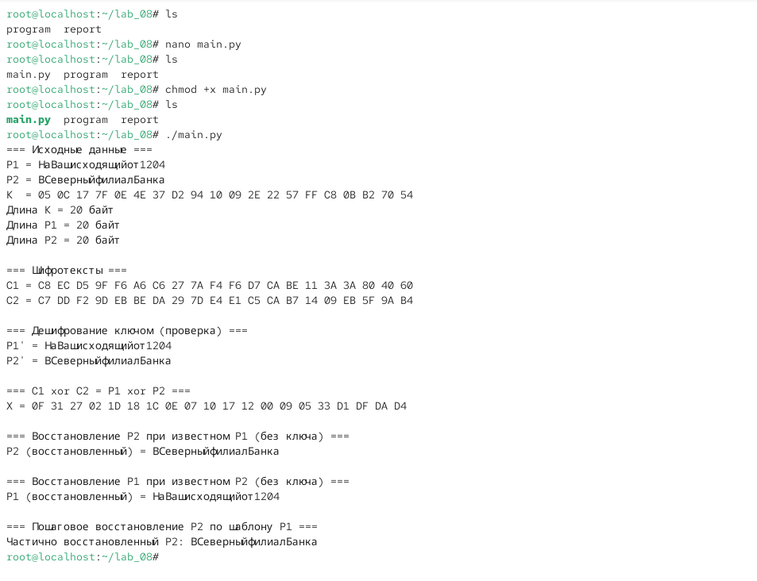

06.октябрь.2026
Элементы криптографии. Шифрование (кодирование) различных исходных текстов одним ключом
Освоить на практике применение режима однократного гаммирования на примере кодирования различных исходных текстов одним ключом.
lab_08, содержащая
подкаталоги program и report.main.py с помощью текстового редактора
nano.chmod +x main.py../main.py.
Рис. 1 — Подготовка директории и запуск приложения
P1 = НаВашисходящийот1204P2 = ВСеверныйфилиалБанкаK = 05 0C 17 7F 0E 4E 37 D2 94 10 09 2E 22 57 FF C8 0B B2 70 54Длина K = 20 байтДлина P1 = 20 байтДлина P2 = 20 байтC1 = C8 EC D5 9F F6 A6 C6 27 7A F4 F6 D7 CA BE 11 3A 3A 80 40 60C2 = C7 DD F2 9D EB BE DA 29 7D E4 E1 C5 CA B7 14 09 EB 5F 9A B4Рис. 2 — Исходные данные и вычисленные шифротексты
P1' = НаВашисходящийот1204 (совпадает с исходным
P1)P2' = ВСеверныйфилиалБанка (совпадает с исходным
P2)X = C1 xor C2 = P1 xor P2X = 0F 31 27 02 1D 18 1C 0E 07 10 17 12 00 09 05 33 D1 DF DA D4P2 (восстановленный) = ВСеверныйфилиалБанкаP1 (восстановленный) = НаВашисходящийот1204Частично восстановленный P2: ВСеверныйфилиалБанка
Рис. 3 — Проверка дешифрования и атака без ключа
xor_bytes(a, b) — побитовый XOR двух
последовательностей байтов одинаковой длины.to_hex(data) — преобразование байтов в
шестнадцатеричную строку.text_to_bytes(text) — преобразование текста в байты с
использованием кодировки CP1251.bytes_to_text(data) — преобразование байтов в текст с
использованием кодировки CP1251.main() заданы исходные данные: P1, P2 и ключ
K.
Рис. 4 — Исходный код приложения main.py (часть 1)
C1 = xor_bytes(P1, K)C2 = xor_bytes(P2, K)P1_dec = xor_bytes(C1, K)P2_dec = xor_bytes(C2, K)X = xor_bytes(C1, C2) — получение
P1 xor P2P2_recovered = xor_bytes(X, P1) — восстановление P2 при
известном P1P1_recovered = xor_bytes(X, P2) — восстановление P1 при
известном P2
Рис. 5 — Исходный код приложения main.py (часть 2)
C1 = P1 ⊕ KC2 = P2 ⊕ KC1 и
C2, он может вычислить:
C1 ⊕ C2 = (P1 ⊕ K) ⊕ (P2 ⊕ K) = P1 ⊕ P2K при этом взаимно уничтожается, так как
K ⊕ K = 0.P1), он может восстановить второй текст:
P2 = (C1 ⊕ C2) ⊕ P1P2, аналогично восстанавливается
P1:
P1 = (C1 ⊕ C2) ⊕ P2P2 = X ⊕ P1, где
X = C1 ⊕ C2, а P1 — известные символы
шаблона.P2.В ходе лабораторной работы было освоено на практике применение режима
однократного гаммирования на примере кодирования различных исходных
текстов одним ключом. Разработано приложение main.py,
позволяющее шифровать и дешифровать тексты P1 и
P2 в режиме однократного гаммирования, а также реализующее
атаку без знания ключа.
Продемонстрировано, что при шифровании двух различных текстов одним
ключом возникает уязвимость: злоумышленник, зная оба шифротекста, может
вычислить P1 ⊕ P2, что при знании одного из открытых
текстов позволяет восстановить второй. Показано, что использование
одного ключа для шифрования нескольких сообщений является небезопасным и
противоречит условиям абсолютной стойкости шифра.
Полученные результаты согласуются с целью работы.